Easter Egg (Shadows of Evil)
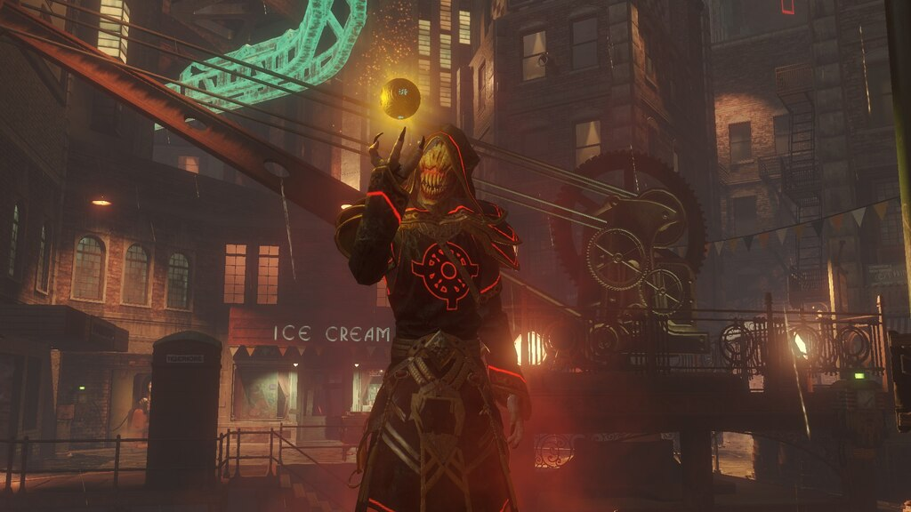
Requisitos:
- Ser 4 jugadores (excepto mods).
- Activar el Pack-A-Punch.
- Que los 4 jugadores tengan la espada mejorada.
Si cumplimos los requisitos Iremos al ritual del Spawn e interactuaremos con el libro del suelo.
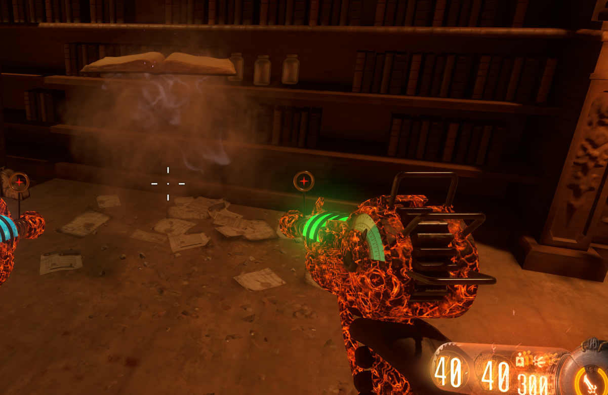
Iremos a la zona de la entrada al Pack-A-Punch y nos llevaremos el estandarte.
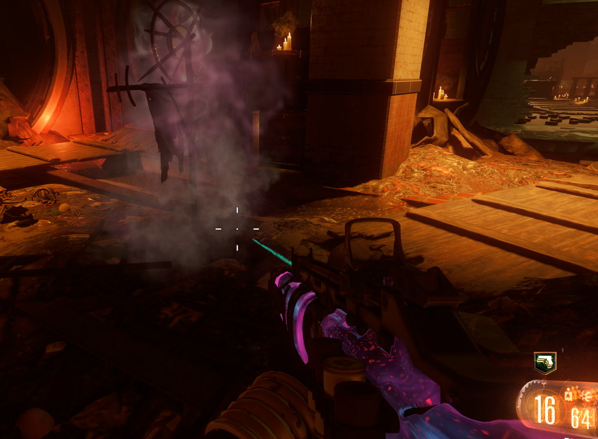
Cargaremos el estandarte en 2 rayos blancos y lo llevaremos a un guardián..
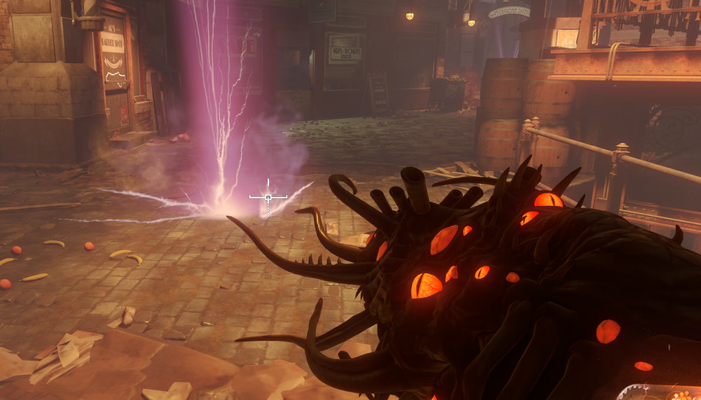
Tendremos que protegerlo de RAPS infinitos y de Shadowman hasta llevarlo a un altar de ritual.
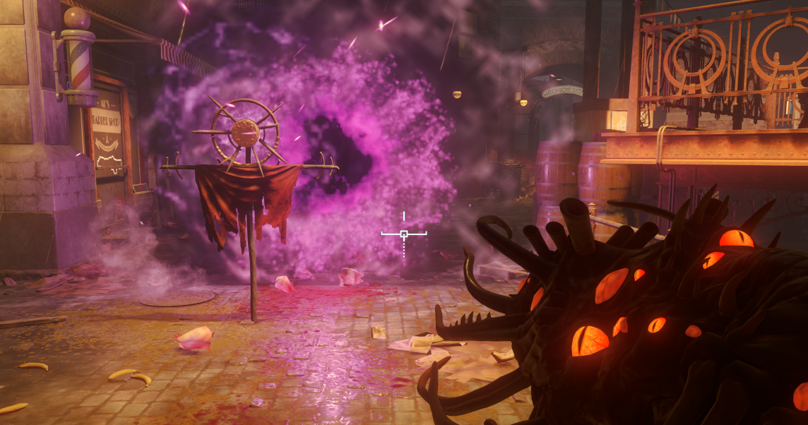
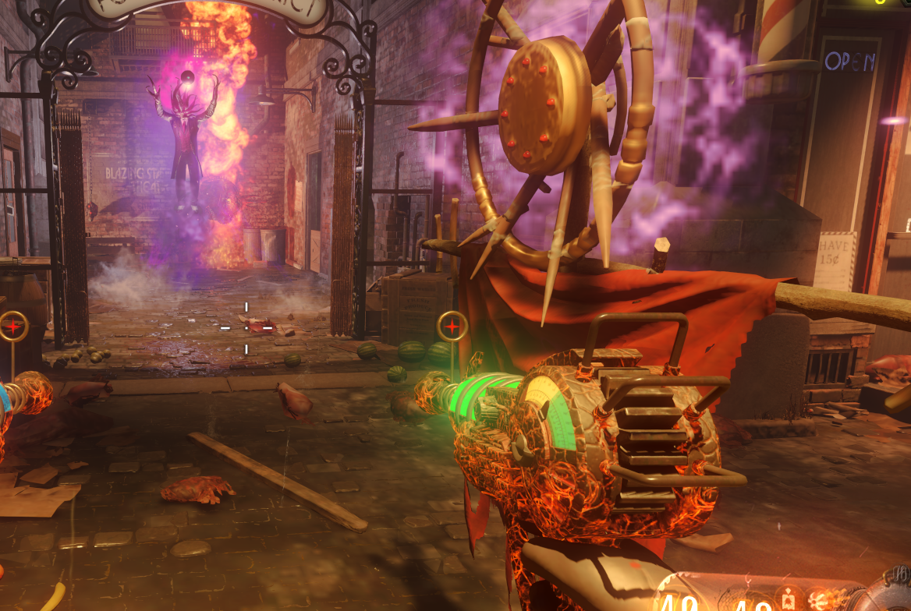
Haremos esto con cada uno de los 4 rituales. Siempre que carguemos a uno tendremos que pasar de ronda para el siguiente.
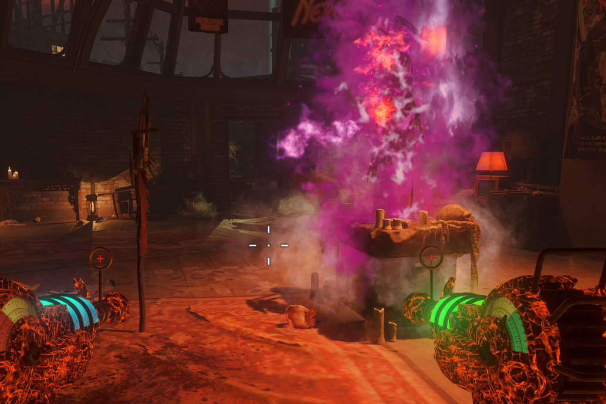
Una vez completado los guardianes estarán en el ritual del Pack-A-Punch. Debemos activarlos para que rompan el escudo de Shadowman y luego dispararle a él.
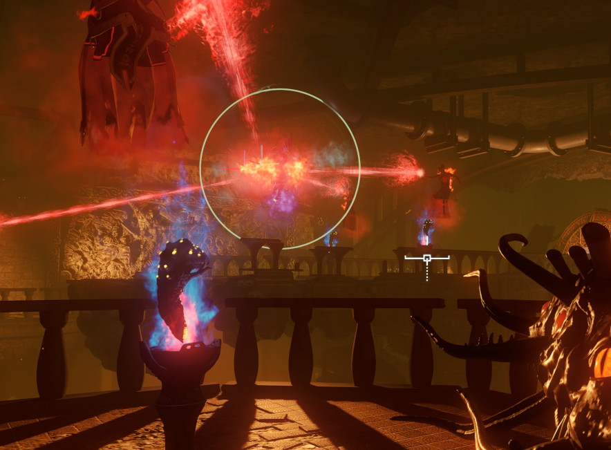
La primera y segunda vez fallaremos y Shadowman invocará Margwas, pero la tercera vez que le disparemos, lo llevaremos al altar y lo atraparemos interactuando con él.
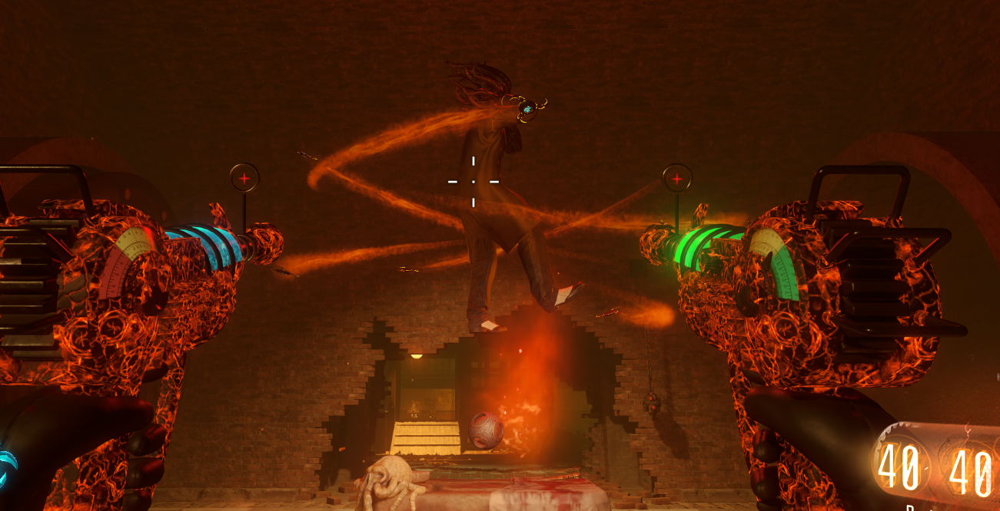
En ese momento el gusano gigante aparecerá y subirá a la zona central. En ese momento los personajes se infectarán cada cierto tiempo y las zonas de humo blanco nos salvarán, pero las marcas rosada nos harán daño.
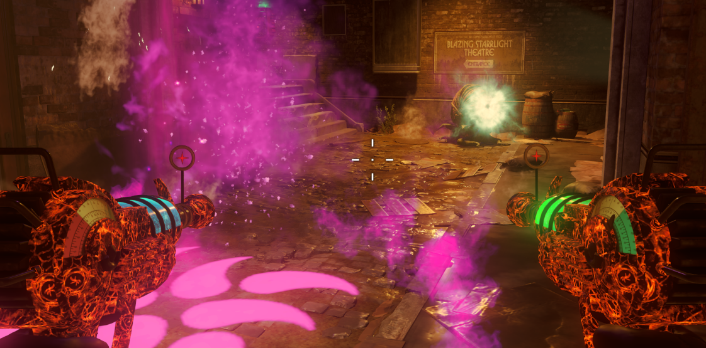
Tendremos que matar Margwas cerca de un pedestal para que este se cargue y entraremos en modo bestia (solo 3 jugadores). Estos jugadores subirán cada uno a una parada de tren y a la misma vez darán corriente a los 3 generadores, dejando las vías de color azul como el de la foto de debajo:
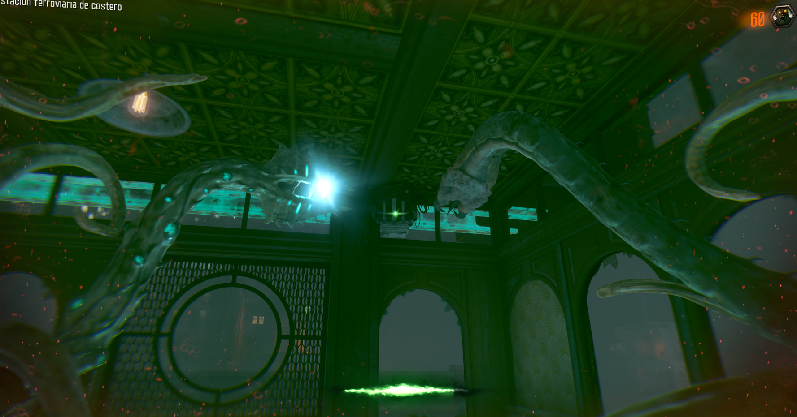
El 4º jugador llamará al tren desde cualquier lugar y todas las bestias irán corriendo a la zona central a electrocutar a los tres guardianes. Estos dispararán al gusano del cielo y saldrá la cinemática final.
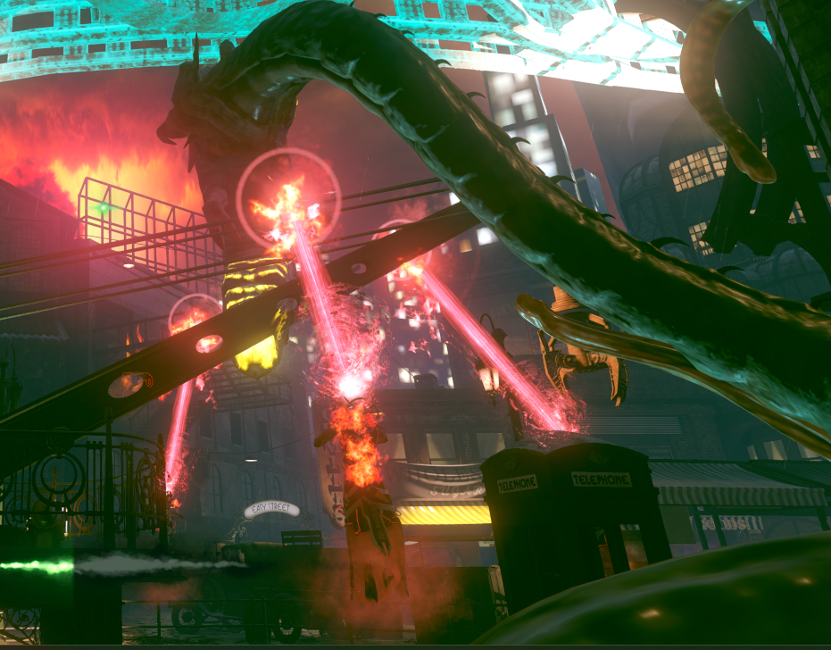